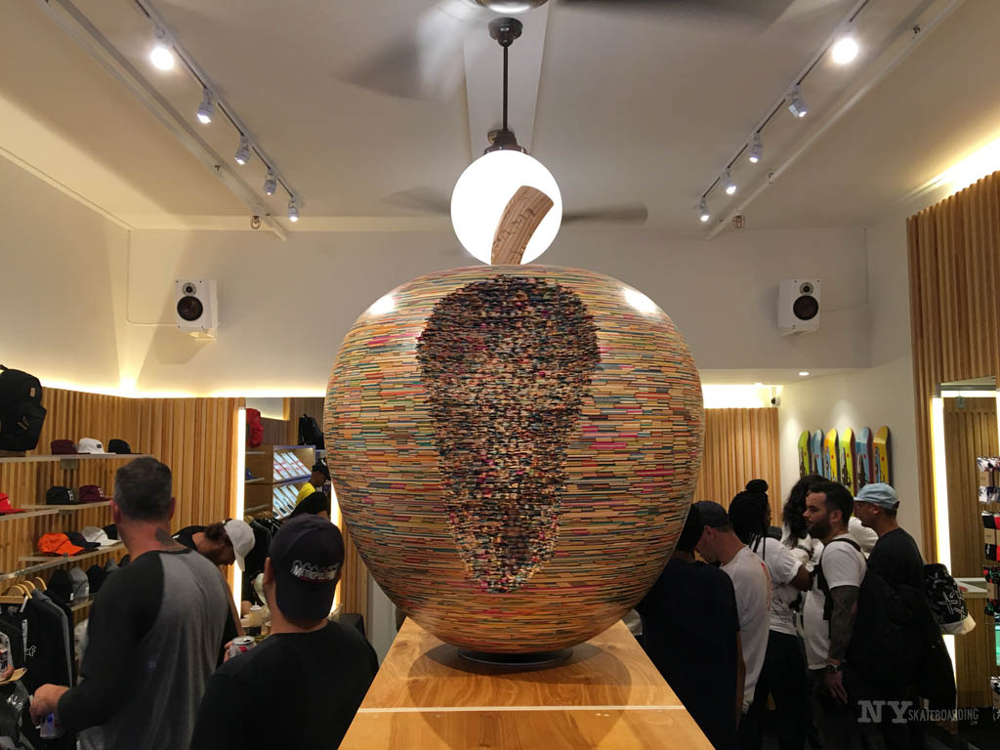

FOUNDED IN 1986 BY STEVE SAS SCHWARTZ AND THOMAS KEIJI AGAWA, SKATE NYC WAS AN ICONIC NEW YORK CITY SKATE SHOP THROUGH THE 1980S AND 90S THAT BECAME HOME TO MANY LEGENDARY NYC SKATEBOARDERS, INCLUDING HAROLD HUNTER AND HUF-FOUNDER KEITH HUFNAGEL, BOTH BORN AND RAISED SKATEBOARDING IN THE STREETS OF THE CITY. A STAPLE TO THE COMMUNITY, SKATE NYC HELPED FOSTER AN ENTIRE GENERATION OF STREET SKATEBOARDING BY OFFERING LOCALS A HEADQUARTERS AT WHICH TO MEET UP, HANG OUT, AND THEN HEAD OUT TO SESSION THE CURBS IN FRONT OF THE SHOP OR TOMPKINS SQUARE PARK ACROSS THE STREET. THIS FALL, HUF AND SKATE NYC HAVE TEAMED UP ON A LIMITED EDITION COLLABORATION CONSISTING OF FLEECE, L/S TEES, S/S TEES, HATS, AND SOCKS. PAYING HOMAGE TO AN ERA BY ENCAPSULATING THE SPIRIT OF NYC SKATE CULTURE OF THE 80S AND 90S, THE HUF X SKATE NYC COLLECTION FEATURES CLASSIC SKATE NYC GRAPHIC ARTWORK, AND ALSO INCLUDES OLD-SCHOOL SKATEBOARD DECK SHAPES AND DECK RAILS.
